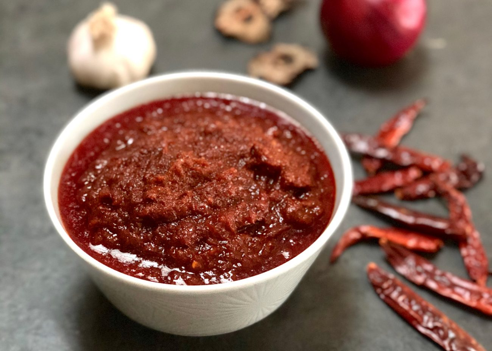

Sambal Recipe
This is the ONLY sambal recipe that you need!

A spicy chili paste that adds a burst of heat and flavor to your Nasi Lemak!
Sambal nasi lemak is a type of sambal that is traditionally served with nasi lemak
Nasi Lemak is always served with a special sambal, making the spicy-sweet sauce as important as the rice itself!
Ingredients:
- 50g dried chillies
- 1 large red onion
- 5 cloves garlic
- 1tbsp ginger
- 2 stalks lemongrass
- 1tbsp belacan (dried shrimp paste), toasted
- 2tbsp fried anchovies
- 1/4 cup oil to blend
- 1tbsp tamarind paste
- 50g coconut palm sugar
- Salt to taste
Steps:
- Dry the toasted belacan for 30 minutes. (optional)
- Add all of the ingredients to for a blended paste. If the ingredients are not blending well, gradually add oil until you get a smooth paste.
- Add a bit of oil to a pan, and heat over low to medium heat. When hot, pour in the blended sambal paste.
- Stir constantly over the low to medium heat so it does not burn. Continue to stir until the sambal sauce
"pecah minyak"
, or the sambal emulsifies and the oil floats above the sambal.
- Once it reaches this stage, add tamarind paste, sugar and salt, if needed.
- Stir through and give a taste test. Sambal should taste sweet and spicy.
Return to Home Page